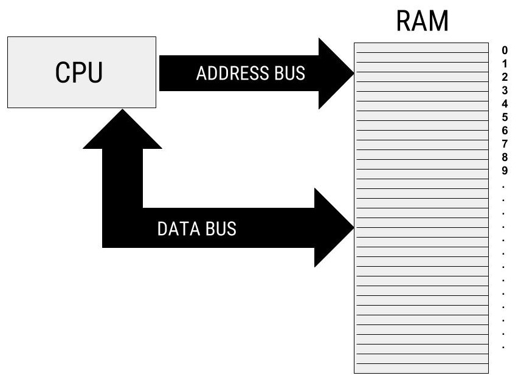
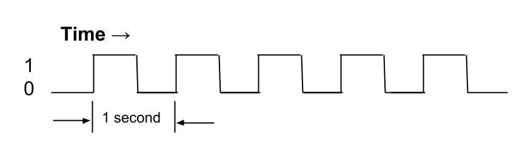

Overview
Machine Instruction Cycle describes the process of execution of an instruction within the computer.
It contains 'Fetch-Decode-Execute-(Store)'.
It allows computer to have different kinds of programs.

Instruction Cycle
- Fetch
- Instruction is fetched from the memory address bus
- Program counter points the next instruction
- CPU retrieves instructions from hard drive or solid state drive
- Decode
- CPU determines which components are required in the execution of the instruction
- Instructions outline parameters for a successful execution
- Execute
- Instruction is executed in Arithmetic/Logic Unit (ALU)
- CPU assigns the specific actions to the relevant system components in order to carry out
the initial program instructions
- It processes the actual data
- Store
- Store the results to a register or to a memory.

Clock
Clock is a square wave signal and it makes sure that everything is kept synchronized.
As every instructions must go through 3 steps of the instruction cycle(fetch, decode, execute), some instructions take several clock cycles to execute.